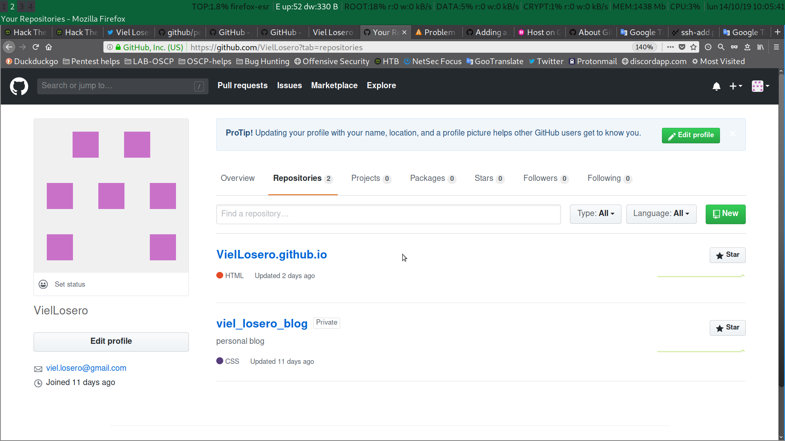

Hugo generador de páginas web estáticas: Hosting en github.
Table of contents
Cuenta de github
Despues de mi anterior post donde empiezo con Hugo la creación de una página web con contenido estático, ahora toca alojar dicha página en github.
No voy a entrar en como crear una cuenta en github, podéis seguir las indicaciones para crear la cuenta desde este enlace. Hosting on github
Una vez creada la cuenta github, añadida la clave ssh para la gestión remota y creado el repositorio, crearemos el submódulo.
Cración del submódulo git
Hugo crea el sitio estático con los ficheros de configuración del tema, contenido, static, etc. pero estos no son el sitio real, solo son para trabajar, podríamos decir, en caliente. La carpeta public es la que contiene el sitio estático creado por hugo, Creando un submódulo para la carpeta public nos permitirá publicar o actualizar la pagina web sin tener que actualizar todos los ficheros de configuración y creación del sitio.
root@kali:~/data/hugo/viel_losero_blog# git submodule add -b master git@github.com:VielLosero/VielLosero.github.io.git public
Clonando en '/root/data/hugo/viel_losero_blog/public'...
remote: Enumerating objects: 10, done.
remote: Counting objects: 100% (10/10), done.
remote: Compressing objects: 100% (9/9), done.
remote: Total 10 (delta 2), reused 0 (delta 0), pack-reused 0
Recibiendo objetos: 100% (10/10), 256.29 KiB | 749.00 KiB/s, listo.
Resolviendo deltas: 100% (2/2), listo.
root@kali:~/data/hugo/viel_losero_blog# Podemos comprobar los submódulos actuales con:
root@kali:~/data/hugo/viel_losero_blog# cat .gitmodules
[submodule "themes/terminal"]
path = themes/terminal
url = https://github.com/panr/hugo-theme-terminal.git
[submodule "themes/ananke"]
path = themes/ananke
url = https://github.com/budparr/gohugo-theme-ananke.git
[submodule "public"]
path = public
url = git@github.com:VielLosero/VielLosero.github.io.git
branch = master
root@kali:~/data/hugo/viel_losero_blog# Creando el sitio
Con un simple comando hugo, el programa nos creará las páginas estáticas en public, recordar quitar el draft(borrador) de la cabecera de los posts para que hugo cree las página estáticas. Con la opcion -t podemos indicar el tema que queremos si tenemos más de un tema instalado.
root@kali:~/data/hugo/viel_losero_blog# hugo -t terminal
| EN
+------------------+----+
Pages | 6
Paginator pages | 0
Non-page files | 0
Static files | 15
Processed images | 0
Aliases | 3
Sitemaps | 1
Cleaned | 0
Total in 10 ms
root@kali:~/data/hugo/viel_losero_blog# Aceptando los cambios
Una vez creados los archivos definitivos del sitio en el directorio public, necesitamos añadir dichos archivos al repositorio y hacer un commit para aceptar los cambios para que tengan efecto en el repositorio.
root@kali:~/data/hugo/viel_losero_blog# cd public/
root@kali:~/data/hugo/viel_losero_blog/public# git add .
root@kali:~/data/hugo/viel_losero_blog/public# git commit -m "create public folder and commit it"
[master 164fb0a] created public folder and commit it
25 files changed, 805 insertions(+), 18 deletions(-)
create mode 100644 assets/2bf08001f42c34e30e1de9d2eb81aead.woff
create mode 100644 assets/62da0ac51db1e4a3a4d57b9154a344fc.woff
create mode 100644 assets/blue.css
create mode 100644 assets/green.css
create mode 100644 assets/main.js
create mode 100644 assets/pink.css
create mode 100644 assets/prism.js
create mode 100644 assets/red.css
create mode 100644 assets/style.css
create mode 100644 categories/index.html
create mode 100644 categories/index.xml
create mode 100644 categories/page/1/index.html
create mode 100644 img/favicon/blue.png
create mode 100644 img/favicon/green.png
create mode 100644 img/favicon/orange.png
create mode 100644 img/favicon/pink.png
create mode 100644 img/favicon/red.png
create mode 100644 img/hugo-dev.png
rewrite index.html (88%)
create mode 100644 index.xml
create mode 100644 page/1/index.html
create mode 100644 sitemap.xml
create mode 100644 tags/index.html
create mode 100644 tags/index.xml
create mode 100644 tags/page/1/index.html
root@kali:~/data/hugo/viel_losero_blog/public# SSH agent
Para no tener que estar escribiendo cada vez la contraseña de nuestra clave SSH podemos añadirla al agente SSH para que nos cree un sistema de inicio de sesión único
root@kali:~/data/hugo/viel_losero_blog/public# eval "$(ssh-agent -s)"
root@kali:~/data/hugo/viel_losero_blog/public# ssh-add ~/.ssh/id_rsa_vielPublicando el sitio
Solo nos queda publicar el sitio y comprobar que todo está correcto. Para publicar el sitio, en la carpeta public, empujaremos los archivos en local hacia la rama master en github.
root@kali:~/data/hugo/viel_losero_blog/public# git push origin master
Enumerando objetos: 40, listo.
Contando objetos: 100% (40/40), listo.
Compresión delta usando hasta 6 hilos
Comprimiendo objetos: 100% (32/32), listo.
Escribiendo objetos: 100% (38/38), 369.84 KiB | 2.33 MiB/s, listo.
Total 38 (delta 12), reusado 0 (delta 0)
remote: Resolving deltas: 100% (12/12), done.
To github.com:VielLosero/VielLosero.github.io.git
de56330..164fb0a master -> master
root@kali:~/data/hugo/viel_losero_blog/public# Aquí podemos ver una captura de pantalla de la subida del directorio public a la rama master de github.

referencias:
Licencia: CC-BY-SA